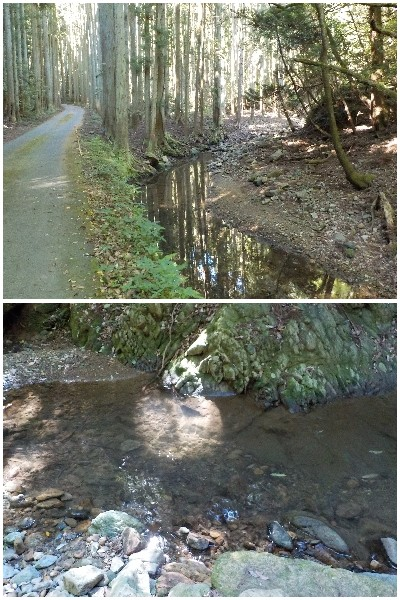
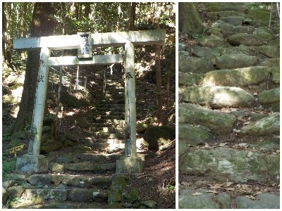
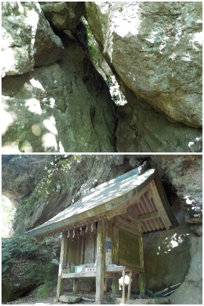

韓竈神社の岩の間を通るのはインパクトありますね。
更新日 : 2026/05/31

唐川新茶まつりに行く予定があったので、近くで有名な韓竈神社にも行くことにしました。
川のせせらぎを聞きながら舗装された道路を歩きます。神社の手洗い場が川なのは自然な感じで良かったです。

しっかりとした鳥居の先からは階段です。天然石の大きさはまちまちなので上がるのが少しハードです。300段あるそなので、体力ない人はゼイゼイな感じになります。
今日は気温が高かったので汗かきました。巨大な岩に到着した時点で、達成感がありました。

岩の隙間は斜めなのでスルスルとは通れません。その先に韓竈神社です。
私はスピリチュアルなものは感じませんでしたが、山歩きしてリフレッシュした感じになりました。
労働じゃなくてレジャーで体を動かすのは楽しいな。